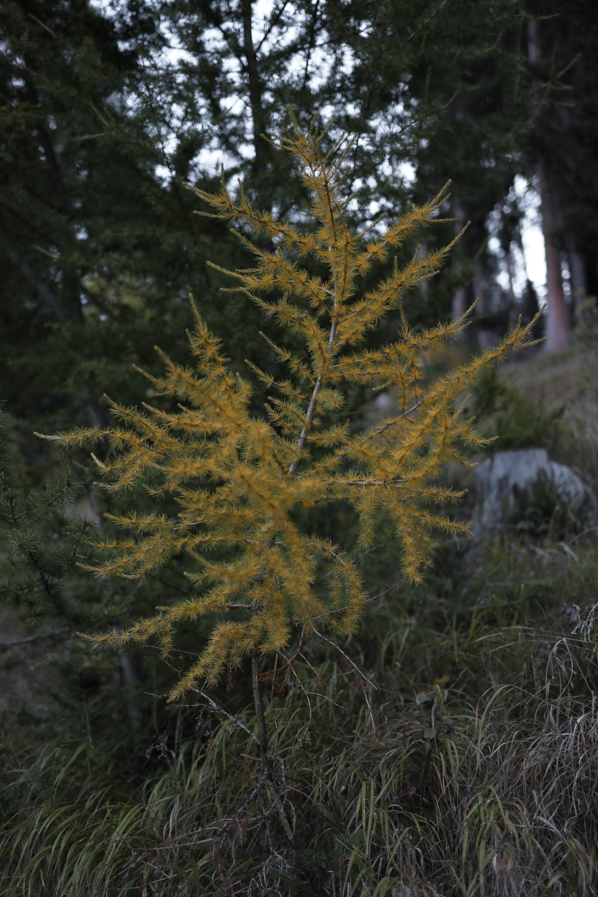
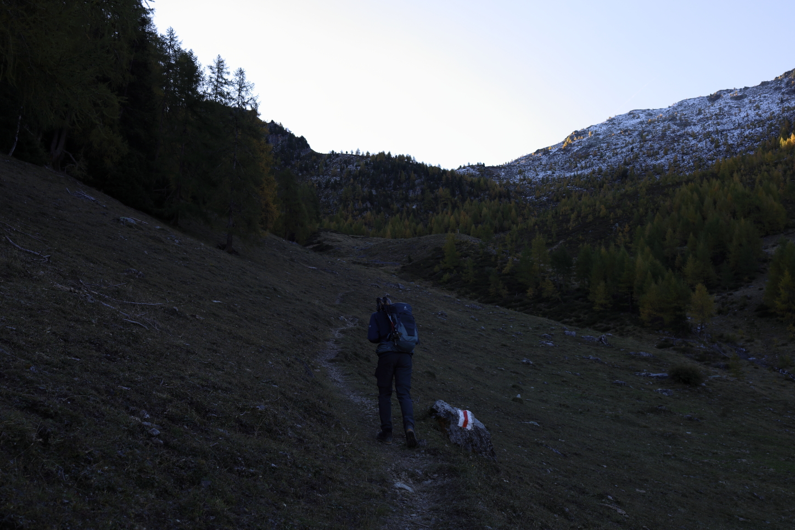
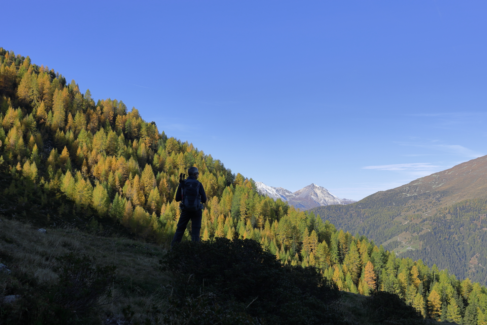
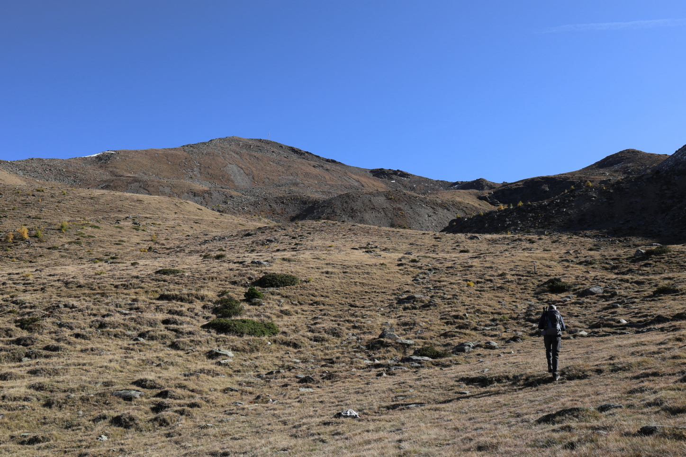
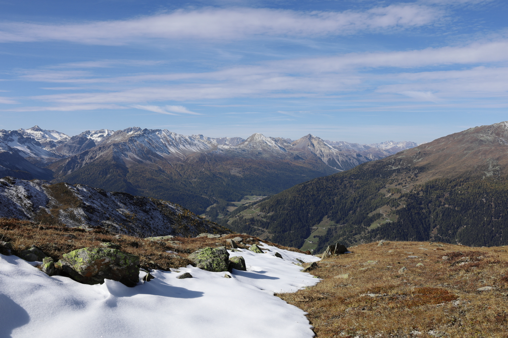
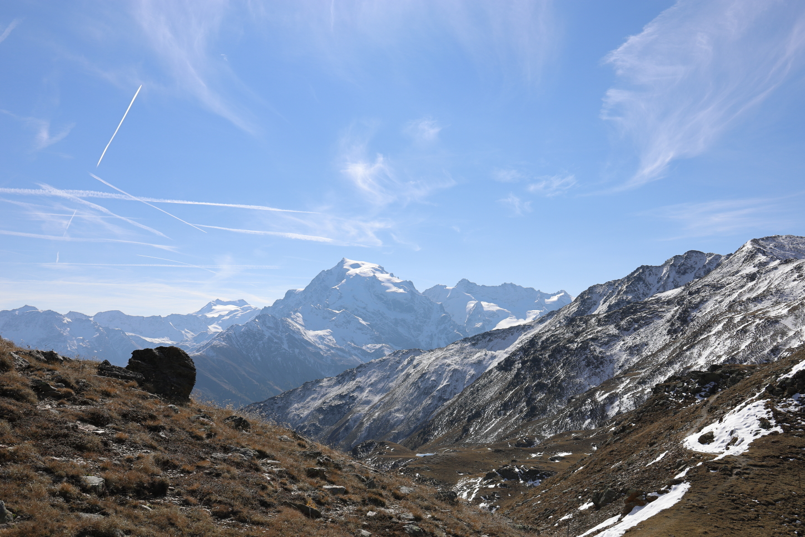
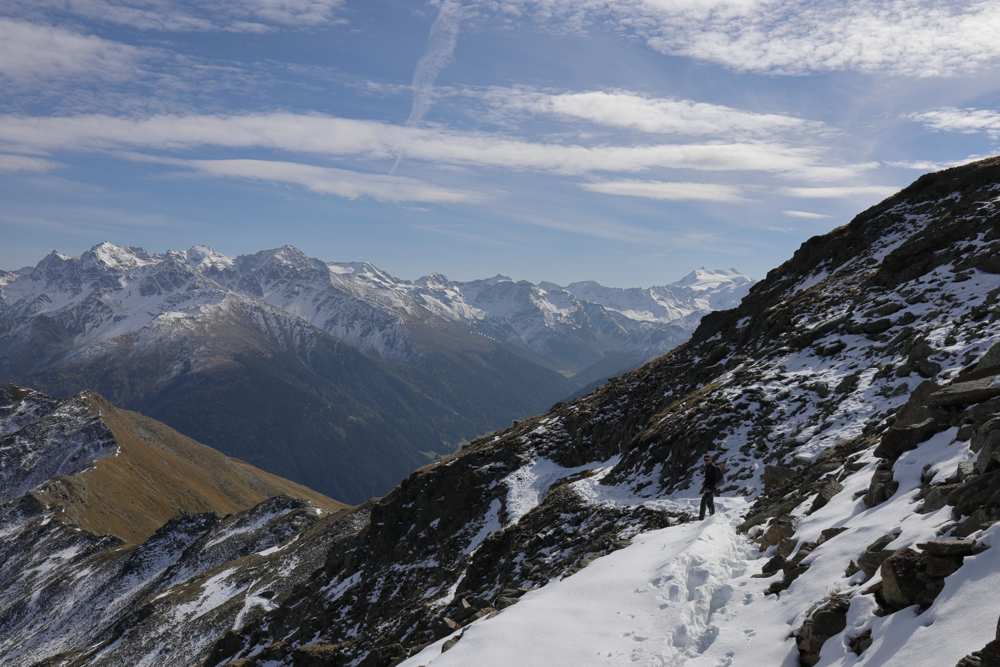
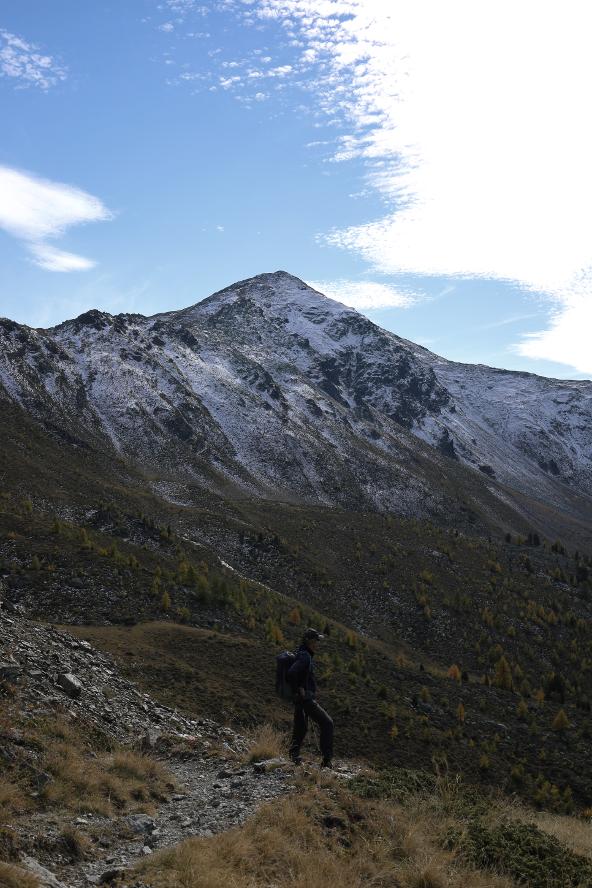
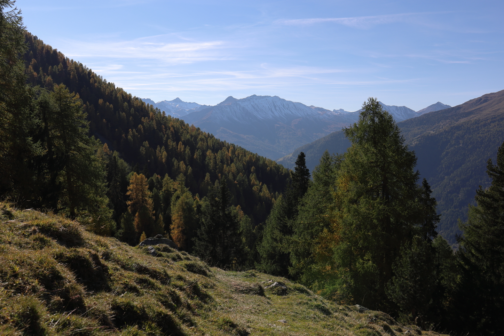

Piz Chavalatsch
October 15, 2021 by Pat and Bruno ‐ 6 min read
| Difficulty | T3 |
|---|---|
| ⇄ Distance | 13.8 km |
| ↑ Up | 1200 m |
| ↓ Down | 1200 m |
| Notable Locations | Piz Chavalatasch, Stelvio National Park, Sta. Maria (Val Müstair) |
| Public Transit Access? | No |

Arrival
We stayed in the
Ascent Among the Larches
The first part of the hike consists of hiking through the forest among the larch trees. For the uninitiated, larch trees are conifer trees that turn bright yellow in the autumn. This only happens for a very short period of time in the autumn; the needles fall off of the larch trees not too long after they turn yellow.
 The larch trees turn a bright yellow at this time of year.
The colours hiking up through the forest for this part of the trail was absolutely incredible — this kind of trail was the primary reason why we came to this part of Switzerland at this time of year. Definitely worth seeing if you get an opportunity!
 A slow and steady incline up to the treeline.
Once we had gotten to a sufficient elevation, we started to peek above the forest and had an absolutely incredible view over the
 A view down the Val Müstair.
Overall, this part of the trail was pretty unproblematic. The elevation gain was pretty consistent and there weren’t any exposed spots. Since this part of the hike was pretty much all in the shade, much of the ground was still frozen from the cold evening before.
 Our first rays of sunshine.
Our first rays of sunshine.
Ascent to the Piz Chavalatsch
The next part of the hike first went across a flat plain just above the treeline. Most of the grass here had already turned orange/yellow which really complemented well with the colour of the larches below us.

Our first view of the
The elevation gain here continued at a somewhat similar pace to the first part of the hike — nothing too crazy but just consistently upwards. As we started getting a little further up, we started hitting the occasional snow field, but none of these really impeded our progress.
 There were a few snow fields, but they were few and far between here on the north face.
Once we had gotten to the final ridgeline up to the

A view once reaching the ridgeline. The glacier-covered peak in the center is the
The final ascent up to the
 The final scent up the ridge to the
The final scent up the ridge to the
Once at the top, we were met with an insane 360 degree panorama over the surrounding region. There’s a small hut at the top which has a couple of benches that you can relax and have a picnic at. All things considered, it was fairly empty at the summit with only around 4 or 5 other people also hanging around taking pictures and enjoying the awesome weather.
 The southern ridge leading down towards Italy. These brave souls were carrying their bikes up through the snow.
The southern ridge leading down towards Italy. These brave souls were carrying their bikes up through the snow.
The eastern ridge along the Swiss-Italian border. This is the ridge we would head down next.
Descent and Ridge Crossing to the Rifairscharte
After a quick lunch, we headed down across the ridge on the north side of the Piz Chavalatsch into the
 The snow was quite a bit deeper on this side of the mountain.
There isn’t much in the way of elevation change across the ridge which made this part of the hike a welcome change from the steady ascent up to the top of the Piz Chavalatsch. We had an incredible view into Switzerland in the west and Italy in the east.
The view down towards Mals (Italy).
We traversed across the ridge until we reached a junction at the
 A view of the north face of the Piz Cavalatsch.
The portion from the
 Heading back down towards Sta. Maria.
Heading back down towards Sta. Maria.
Return Through the Forest
I’m normally not particularly fond of hiking through the forest while I’m in the mountains; the views are usually not nearly as impressive as when hiking above the treeline. This was a clear exception here though — the hike amongst the larches was truly a treat.
 Reaching the treeline.
We were also lucky to have lighting conditions comparable to golden hour while making our way through the forest despite it only being late afternoon by this point. The light was just peeking through the trees and was causing some really dramatic shadows between the trees and yellow grasses.
 The late afternoon sun peaking through the forest on our way back to the car.
The late afternoon sun peaking through the forest on our way back to the car.
After a beautiful hike through the forest, we had arrived at part of the trail that we took on our way up to the Piz Chavalatsch. After making our way back through the forest and back to the car, we enjoyed a well deserved rest back at the hotel after the very short drive back to